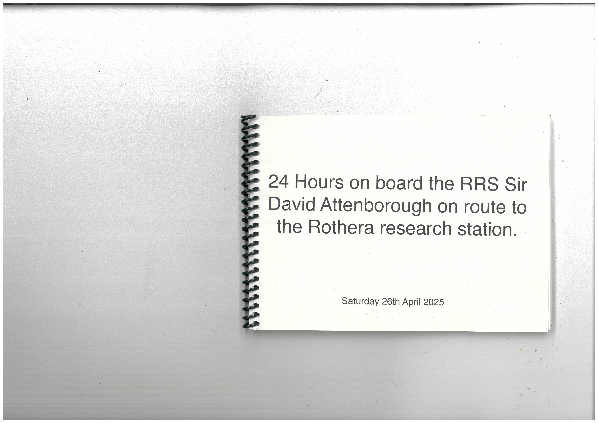
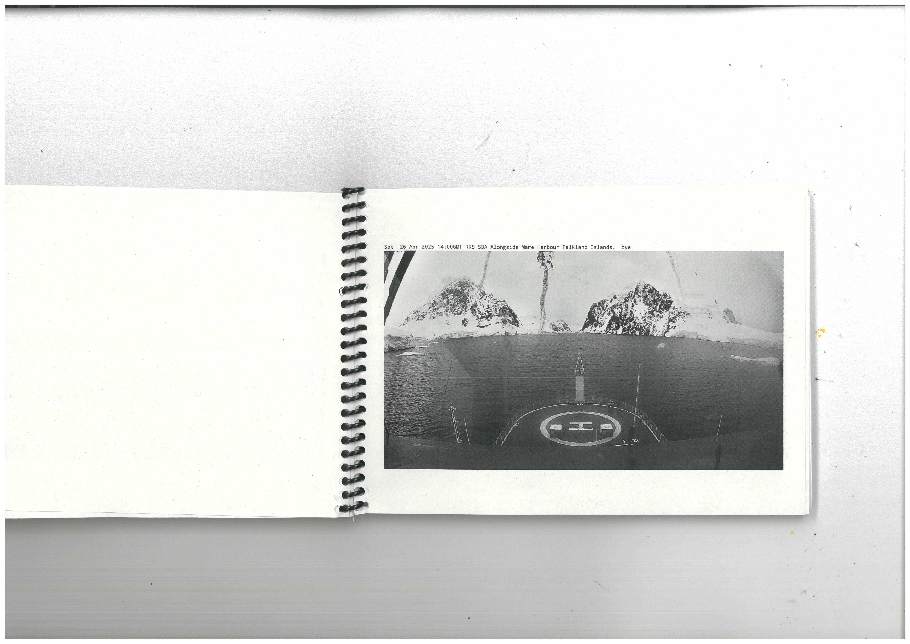
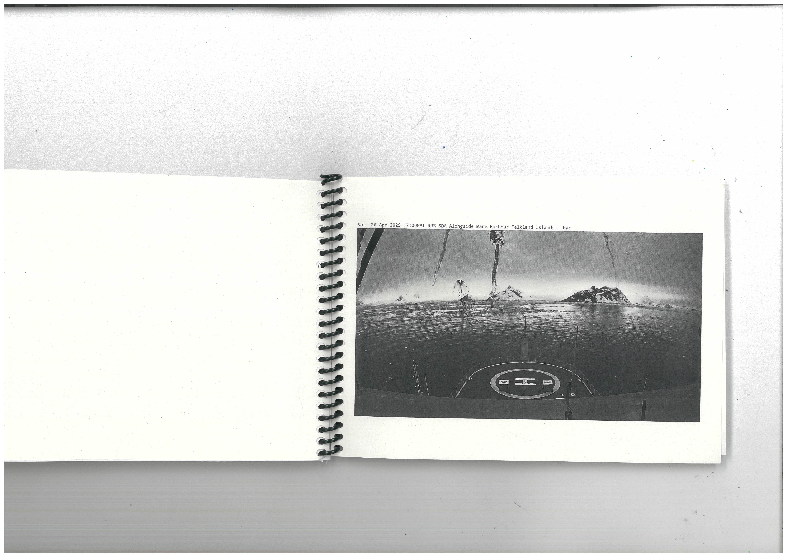
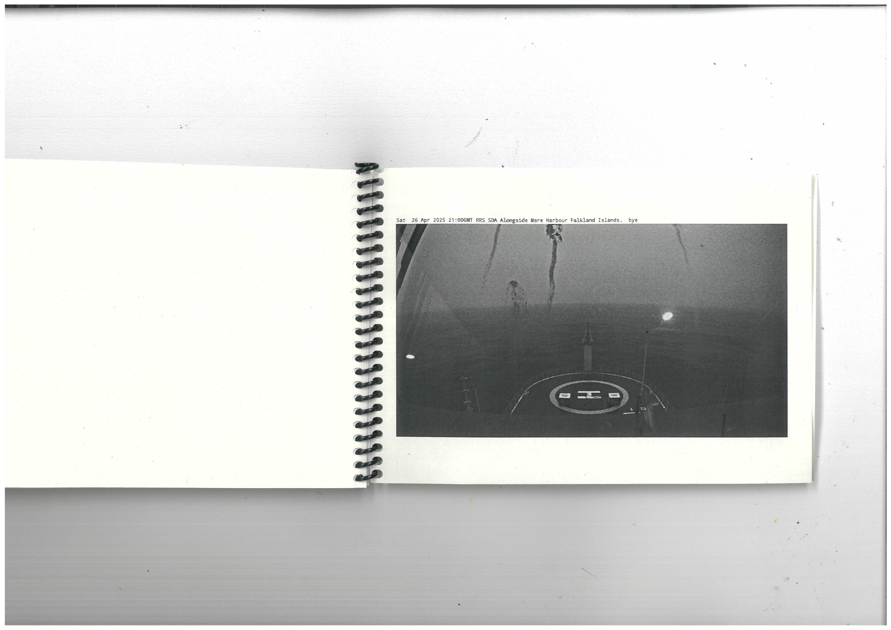
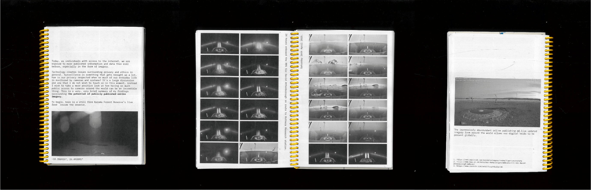
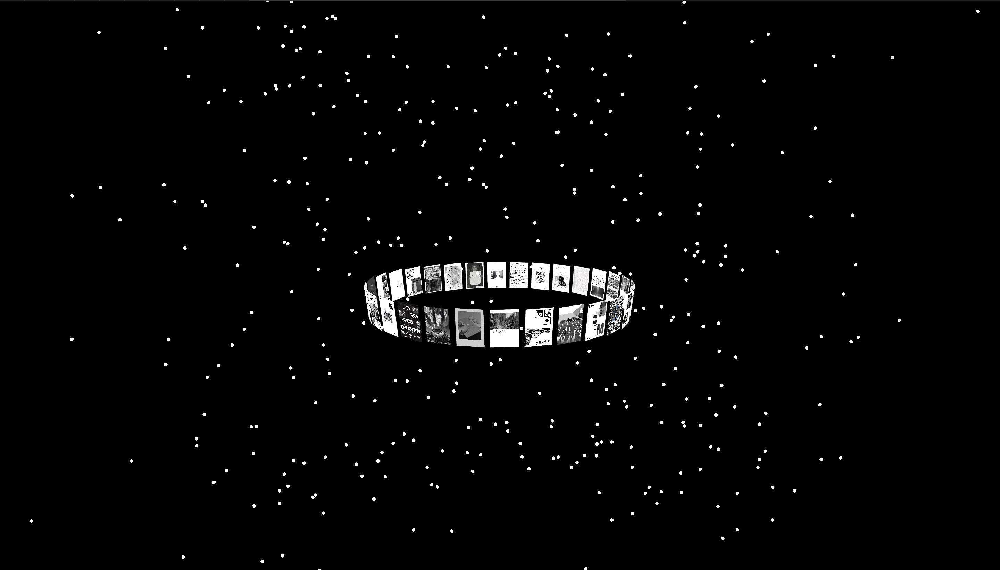

A project exploring what it means to 'publish'. Each of us were tasked with investigating our own avenue of publishing, making a series of small publications to present our ideas. We then summarised our work into 4 pages and as a group created two editions of a publication using everyones pages. This brief really delves into the idea of what publishing is on multiple levels especially in its form and process, it's a playful and experimental project.




simple publication made highlighting the impressive ability for the RRS Sir David Attenborough to continuously publish live camera updates to the rest of the world.

Page 1 text:
Today, as individuals with access to the internet, we are
exposed to more published information and data than ever
before, especially in the form of imagery.
Technology creates issues surrounding privacy and ethics in
general. Surveillance is something that gets brought up a lot,
how is our privacy respected when so much of our everyday life
is monitored by cameras and systems? It's a large discussion
and one that I do not wish to touch on in this moment, instead
I wish to take a more positive look at how having so much
public access to cameras around the world can be an incredible
thing. This is a very, very brief summary of my findings
surrounding the potential of publicly published online
imagery.
To begin, here is a still from Kazuma Forest Reserve's live
feed inside the reserve.
Page 2,3 text:
24 hours onboard the RRS Sir David Attenborough on route to Rothera Research station.
Saturday 26th April 2025.
Page 4 text:
The impressively abundundant online publishing of live updated
imagery from around the world allows our digital selfs to be
present globally.
1. https://www.earthcam.com/world/botswana/chobe/?cam=campkuzuma
2. https://www.bas.ac.uk/data/our-data/images/webcams/rrs-sir-david-
attenborough-webcam/
3. https://www.youtube.com/watch?v=ydYDqZQpim8

This brief ran simultaneously with a
computaion project I had which was about
online spaces and I was interested in 3D
spaces in that project, so I thought it would
be interesting to create a 3D space for the
publication to sit in, also partly because my
explorations in this project have been about
being able to situate yourself into remote
locations around the world using online
webcams and now I would be making it
possible to place yourself within an online 3D
space for the publication.